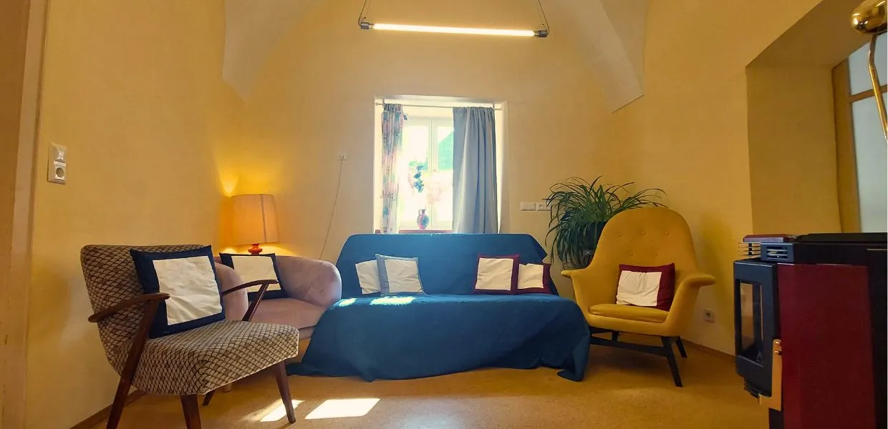

Was sind geführte esoterische Meditationen?
Bei einer geführten Meditation bist du nicht allein mit dir und deinen Gedanken. Ich leite dich mit meiner Stimme Schritt für Schritt durch die Übung: Ich sage dir, worauf du deine Aufmerksamkeit richten kannst, was es wahrzunehmen gibt und wie du mit dem umgehst, was dabei auftaucht. Gerade wenn du noch wenig Erfahrung mit Meditation hast, ist das eine große Erleichterung – du musst nicht selbst wissen, wie es weitergeht.
Doch was macht diese Meditationen esoterisch? Esoterik beschäftigt sich für mich mit Wissen über die Welt, und die Energetik ist eine sehr spezielle Form der Arbeit mit den Energien, die in dieser Welt existieren. Gedanken, Gefühle und Stimmungen haben aus dieser Sicht auch eine energetische Form, mit der du unmittelbar arbeiten kannst. Die geführte Meditation ist der Ort, an dem beides zusammenkommt: Aus dem Wissen wird eine Erfahrung, die du in deinem eigenen Erleben überprüfen kannst.
Daraus ergibt sich auch der wichtigste Unterschied zu dem, was viele unter Meditation verstehen. Meine Meditationen sind keine Wohlfühlmeditationen zum Entspannen und Abschalten, sondern Arbeitsmeditationen. Du gehst darin aktiv mit einem bestimmten Thema in Kontakt – zum Beispiel mit deiner Wut, deiner inneren Unruhe oder deiner Energie.
Deshalb meditieren wir im Sitzen und nicht im Liegen. Im Sitzen bleibst du wach und aktiv bei der Sache, während du im Liegen schnell in einen passiveren, schläfrigeren Zustand rutschst. Aus demselben Grund verzichte ich oft bewusst auf Hintergrundmusik: Sie würde dich eher ablenken, als dich in der Arbeit mit dir selbst zu unterstützen.
Vielleicht kennst du meine Meditationen bereits als Aufnahmen. In der Gruppe kommt etwas hinzu, das eine Aufnahme nicht bieten kann: Wir sitzen gemeinsam in einem Raum, und ich kann auf das eingehen, was an diesem Nachmittag gerade da ist. Erkenntnis allein verändert noch nichts – erst wenn du sie praktisch erfährst, kann sie in deinem Alltag wirksam werden.

Mein Seminarraum in Pöllau
Wir treffen uns in meinem Seminarraum in Pöllau – einem ruhigen, warmen Raum, in dem du ankommen und zur Ruhe finden kannst.
Bevor wir beginnen, nehmen wir uns einen Augenblick Zeit, um wirklich da zu sein. Dann führe ich dich durch die Meditation.
So funktioniert die Gruppe
Damit du gut planen kannst, findest du hier alles Wichtige auf einen Blick.
Voraussichtlich 15. Oktober
Der genaue Start hängt von den Bauarbeiten in Pöllau ab. Sollte sich der Beginn verschieben, gebe ich dir rechtzeitig Bescheid.
Jeden Donnerstag, 15 Uhr
Die Meditationsgruppe trifft sich wöchentlich am Donnerstagnachmittag in meinem Seminarraum in Pöllau.
Ab zwei Teilnehmern
Du kannst jederzeit einsteigen und kommst, wann es für dich passt. Die Meditation findet statt, sobald mindestens zwei Teilnehmer angemeldet sind.
Mittwochabend, 20 Uhr
Bitte melde dich für jede Donnerstagsmeditation bis spätestens Mittwochabend um 20 Uhr an. So weiß ich rechtzeitig, ob die Gruppe zustande kommt.
Bitte nimm vorher Kontakt mit mir auf
Bevor du das erste Mal dabei bist, möchte ich kurz mit dir sprechen. So lernen wir uns kennen, und du kannst alle Fragen stellen, die dir auf dem Herzen liegen.
Ich freue mich auf dich
Ruf mich an, schreib mir eine Nachricht über WhatsApp oder Signal oder schick mir eine E-Mail. Wenn du zum ersten Mal kommst, vereinbaren wir zuerst ein kurzes Gespräch.
Für alle weiteren Donnerstage genügt eine kurze Nachricht bis Mittwochabend, 20 Uhr.
Schloss 1
8225 Pöllau, Österreich